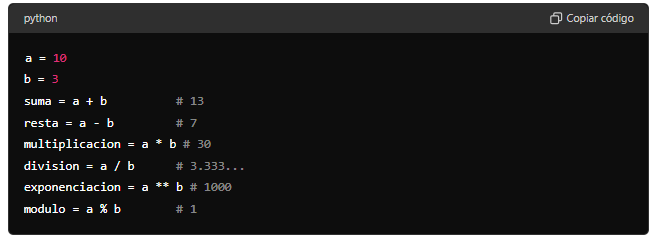
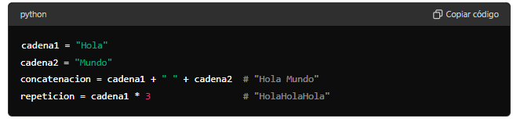
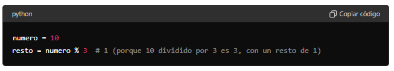
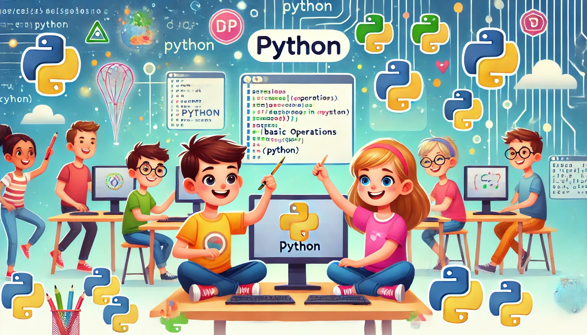
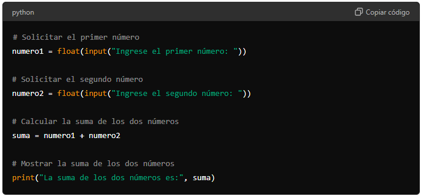
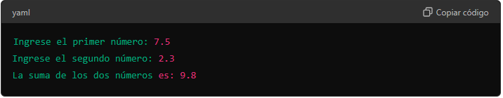

División (/): Divide el primer número por el segundo.
Exponenciación (**): Eleva el primer número a la potencia del segundo.
Módulo (%): Devuelve el resto de la división del primer número por el segundo.

Operador Módulo
Módulo (%): Devuelve el resto de la división de un número por otro. Es útil para determinar si un número es par o impar, entre otras aplicaciones.
CONCATENACIÓN DE CADENAS
Concatenación (+): Une dos cadenas de texto.
Repetición (*): Repite una cadena un número determinado de veces.

OPERADOR MÓDULO
Módulo (%): Devuelve el resto de la división de un número por otro. Es útil para determinar si un número es par o impar, entre otras aplicaciones.

ACTIVIDADES
CÁLCULOS MATEMÁTICOS SIMPLES
Escribe un programa en Python que realice operaciones matemáticas simples con dos números. El programa debe mostrar el resultado de cada operación de manera clara.
Instrucciones:
Define dos variables:
Asigna el valor 10 a una variable llamada a.
Asigna el valor 7 a una variable llamada b.
Realiza las siguientes operaciones matemáticas:
Suma de a y b.
Resta de a y b.
Multiplicación de a y b.
División de a entre b.
Exponenciación de a elevado a b.
Módulo (residuo) de a dividido por b.
Muestra los resultados:
Usa la función print para mostrar el resultado de cada operación junto con un mensaje que indique qué operación se realizó.
Consejos:
Asegúrate de escribir correctamente los operadores matemáticos (+, -, *, /, **, %).
Usa la función print para mostrar mensajes claros y los resultados de las operaciones
Revisa tu código para asegurarte de que no haya errores de sintaxis.

¡Diviértete programando y aprendiendo cómo funcionan las operaciones básicas en Python!
CONCATENAR Y REPETIR CADENAS
Crea un programa en Python que concatene y repita cadenas de texto para formar frases divertidas.
Instrucciones:
Define tres variables de texto:
Asigna una palabra divertida a una variable llamada palabra1.
Asigna otra palabra divertida a una variable llamada palabra2.
Asigna una palabra extra divertida a una variable llamada palabra3.
Realiza las siguientes operaciones con cadenas:
Concatenar palabra1 y palabra2 para formar una frase.
Repetir palabra3 tres veces seguidas para formar una expresión divertida.
Concatenar la frase anterior con la expresión divertida.
Muestra las frases resultantes: Usa la función print para mostrar cada frase o expresión creada.
Consejos:
Asegúrate de escribir correctamente las cadenas y los operadores de concatenación (+) y repetición (*).
Usa la función print para mostrar mensajes claros y los resultados de las operaciones con cadenas.
Revisa tu código para asegurarte de que no haya errores de sintaxis.
¡Diviértete programando y creando frases divertidas con Python!
CALCULA EL ÁREA DE UN RECTANGULO
Crea un programa en Python que solicite al usuario el largo y el ancho de un rectángulo, y luego calcule y muestre su área.
Instrucciones:
Solicita al usuario que ingrese el largo y el ancho:
Usa la función input para pedir al usuario que ingrese el largo del rectángulo y almacena el valor en una variable llamada largo.
Usa la función input para pedir al usuario que ingrese el ancho del rectángulo y almacena el valor en una variable llamada ancho.
Calcula el área del rectángulo:
Multiplica el largo por el ancho y almacena el resultado en una variable llamada area.
Muestra el área del rectángulo:
Usa la función print para mostrar el área calculada con un mensaje claro.
Consejos:
Asegúrate de convertir las entradas del usuario a números de punto flotante (float) usando float(input(...)), para permitir cálculos con decimales.
Usa la función print para mostrar el resultado con un mensaje claro y fácil de entender.
Revisa tu código para asegurarte de que no haya errores de sintaxis y que las variables estén correctamente definidas.
¡Diviértete programando y aprendiendo a calcular el área de un rectángulo con Python!
ASIGNACIÓN DE TAREAS Y CIERRE
Tarea:
Escribir un programa que calcule la suma de dos números dados por el usuario..
Cierre:
Resumir, en el cuaderno y a mano, los puntos clave de la sesión
Instrucciones:
Solicita al usuario que ingrese dos números:
Usa la función input para pedir al usuario que ingrese el primer número y almacena el valor en una variable llamada numero1.
Usa la función input para pedir al usuario que ingrese el segundo número y almacena el valor en una variable llamada numero2.
Calcula la suma de los dos números:
Suma numero1 y numero2 y almacena el resultado en una variable llamada suma.
Muestra la suma de los dos números:
Usa la función print para mostrar la suma calculada con un mensaje claro.
Consejos:
Asegúrate de convertir las entradas del usuario a números de punto flotante (float) usando float(input(...)), para permitir cálculos con decimales.
Usa la función print para mostrar el resultado con un mensaje claro y fácil de entender.
Revisa tu código para asegurarte de que no haya errores de sintaxis y que las variables estén correctamente definidas.
Código del Programa

Explicación del código:
Solicitar el primer número:
numero1 = float(input("Ingrese el primer número: ")):
La función input muestra el mensaje "Ingrese el primer número: " y espera que el usuario ingrese un valor.
El valor ingresado se captura como una cadena de texto (string).
La función float convierte esa cadena de texto en un número de punto flotante (decimal).
Este número se almacena en la variable numero1.
Solicitar el segundo número:
numero2 = float(input("Ingrese el segundo número: ")):
Similar a la línea anterior, se muestra el mensaje "Ingrese el segundo número: " y se espera que el usuario ingrese un valor.
El valor ingresado se convierte a un número de punto flotante y se almacena en la variable numero2.
Calcular la suma de los dos números:
suma = numero1 + numero2:
Esta línea suma los valores almacenados en numero1 y numero2.
El resultado de la suma se almacena en la variable suma.
Mostrar la suma de los dos números:
print("La suma de los dos números es:", suma):
La función print se utiliza para mostrar el mensaje "La suma de los dos números es:" seguido del valor de la variable suma.
El resultado de la suma se convierte automáticamente a una cadena de texto y se muestra en la pantalla junto con el mensaje.
Resultado Esperado:
Cuando ejecutes el programa e ingreses dos números, deberías ver algo similar a esto en la pantalla:

Resumen del funcionamiento:
Entrada del usuario: El programa solicita al usuario que ingrese dos números. Estos números se convierten de texto a números de punto flotante para poder realizar operaciones matemáticas con ellos.
Cálculo: El programa suma los dos números ingresados.
Salida: El programa muestra el resultado de la suma en la pantalla con un mensaje descriptivo.
Este programa es un ejemplo sencillo de cómo interactuar con el usuario para recibir entradas, realizar cálculos con esas entradas y mostrar el resultado.